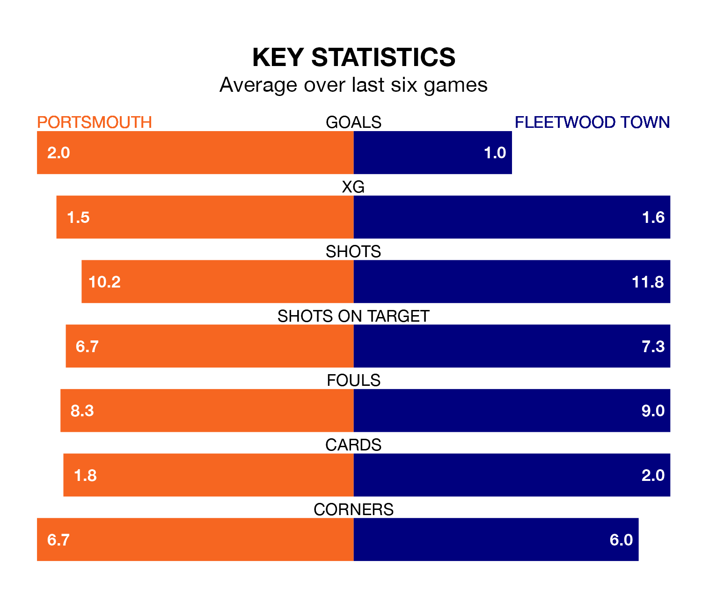

Mid-season relegation candidates Fleetwood Town face a challenge away against high-flying Portsmouth at Fratton Park on Saturday.
Fleetwood Town are 23rd in the EFL League One table, and have picked up four wins and four draws in their 20 games to date.
Pompey, meanwhile, are top of the standings with 48 points, having won 14 and drawn six of their first 21 matches.
With 37 goals in 21 games so far this season, Portsmouth are scoring more than average in the league with 1.8 goals per game. And they are conceding fewer than average, letting in 16 goals at a rate of 0.8 per game.
Fleetwood, meanwhile, are below average scorers, with 0.9 goals per game, compared to a league average of 1.3. They have conceded 1.8 goals per game.
With Will Norris between the sticks, Pompey can rely on one of the league's safest pair of hands. He has kept 11 clean sheets in his 21 appearances this season, and no 'keeper has prevented the opposition scoring more often in EFL League One.
In Town's net, Jay Lynch has three clean sheets in 19 games. He has conceded a goal every 54 minutes, more than twice as often as the 126 minutes between goals for Norris.
The hosts are in good form in EFL League One, with four wins and a draw from their last six games.
With a win and a draw over that period, the Cod Army's form is much worse – they have taken four points from 18, compared to Portsmouth's 13.
In the last five years, Portsmouth and Fleetwood have played each other on 10 occasions. Portsmouth won five of them, Fleetwood one, and they drew four times.
On average, Pompey scored 1.7 goals and the Cod Army 1.0 in those matches.
Their last meeting was on January 24, when Portsmouth won 2-0 away.
Portsmouth's last match was on December 16, a 3-0 win against Shrewsbury Town, with Abu Kamara (two) and Marlon Pack getting the goals for Pompey.
Fleetwood lost 1-0 against Peterborough United last time out, also on December 16.
Saturday's match will be refereed by Tom Nield, who has taken charge of three EFL League One games so far this season, issuing one red card and booking 16 players. He has not awarded any penalties.
The last Fleetwood game Nield refereed was the 3-1 loss away at Bolton Wanderers on August 15. He is yet to oversee a match featuring Portsmouth this season.
Updated: 12:43, 20/12/23